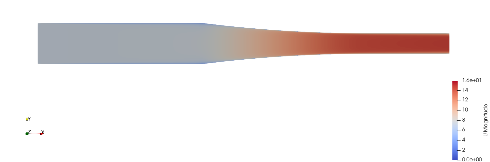
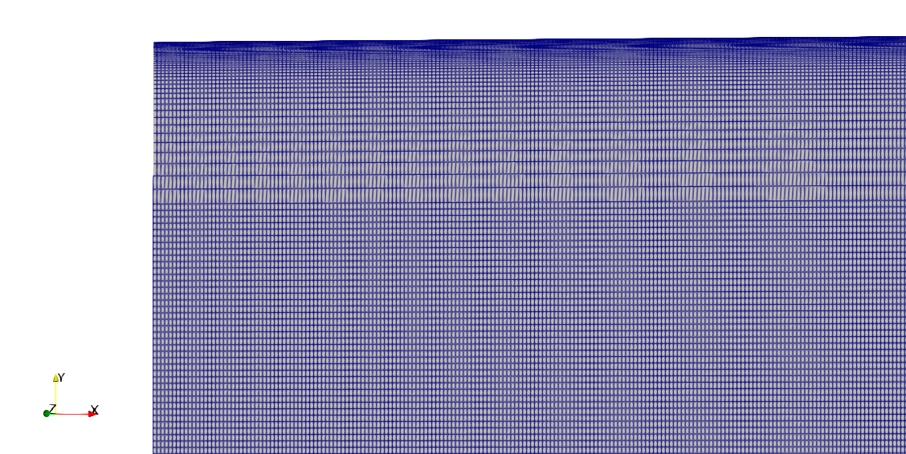
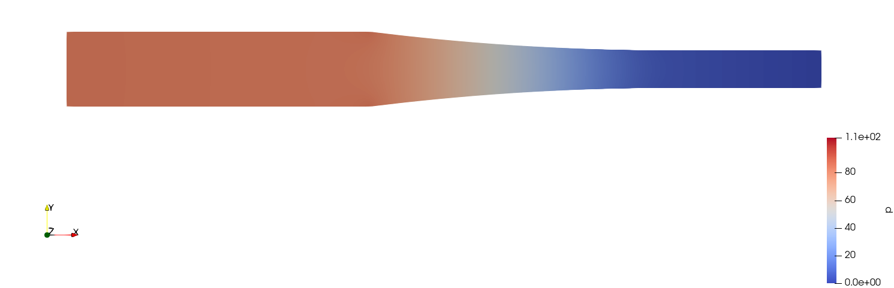
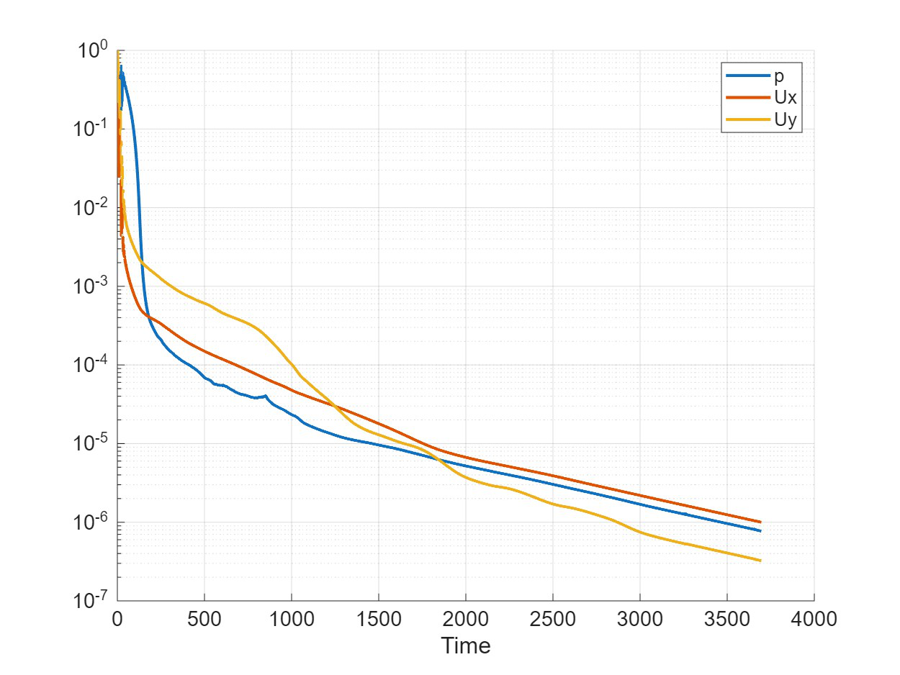
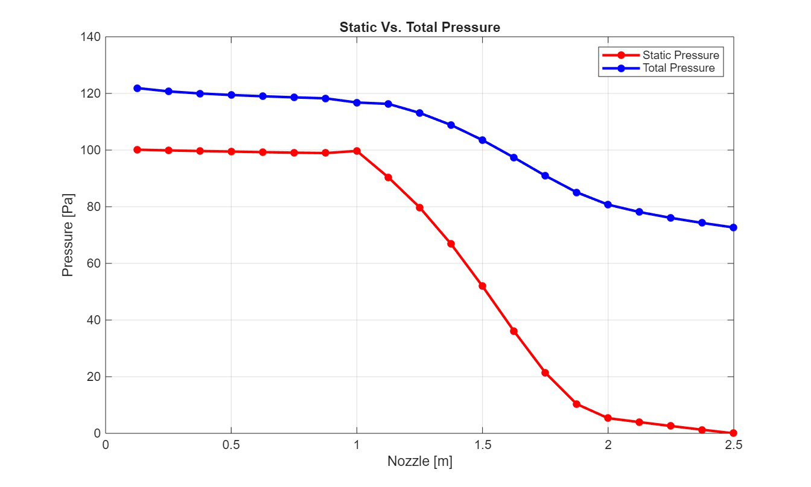
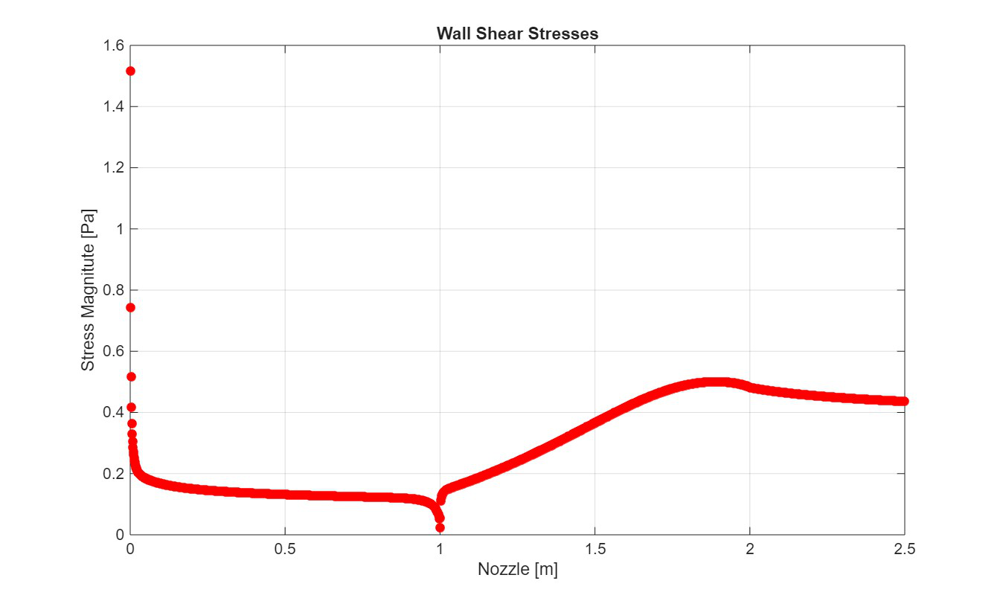

Engineering Challenge
Build a reliable CFD model of a 2D converging nozzle, quantify mesh sensitivity and compare laminar, wall-function and wall-resolved turbulent predictions against ideal flow behaviour.
Computational Fluid Dynamics · Internal Flow
Laminar, turbulent and wall-resolved analysis of a two-dimensional contraction
An OpenFOAM study connecting mesh design, turbulence modelling and near-wall resolution to pressure, velocity, flow-rate and wall-shear predictions.

Build a reliable CFD model of a 2D converging nozzle, quantify mesh sensitivity and compare laminar, wall-function and wall-resolved turbulent predictions against ideal flow behaviour.
The Challenge
The 2.5 m nozzle contracts from a 0.25 m inlet height to a 0.125 m outlet height. Its computational domain was divided into inlet, converging and outlet blocks to control cell distribution and maintain smooth transitions across the complete internal-flow path.
The expected acceleration and static-pressure reduction provided a theoretical reference, while mesh refinement, residual histories and outlet profiles were used to establish whether each numerical result was stable and physically credible.
Simulation Architecture
Laminar
Turbulent
Near-Wall Resolution
The final three-block turbulent mesh used a grading factor of 200 to concentrate centroids near both walls. It achieved y+ values from 0.11 to 0.93, with an average of 0.28.
This resolved the no-slip condition more faithfully and captured higher near-wall shear peaks than the wall-function cases, while leaving the global pressure and velocity trends substantially unchanged.

Flow Results

Pressure
Velocity
Validation & Interpretation



Outcome
Flow Rate
Wall Resolution
Methods & Tools